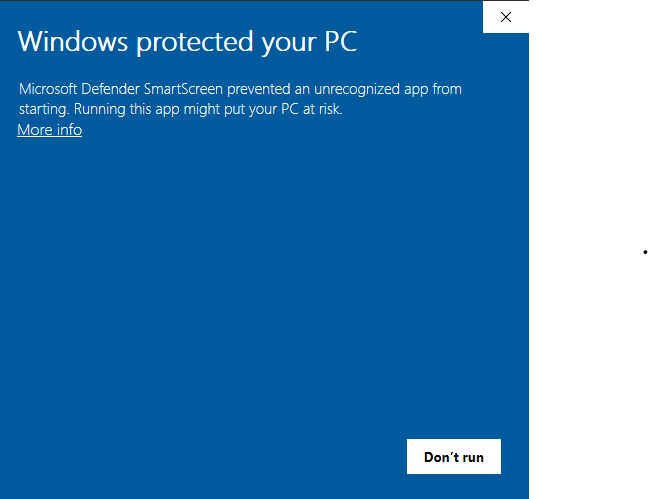
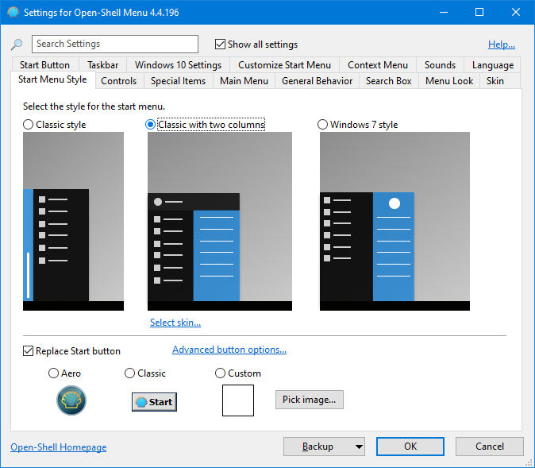
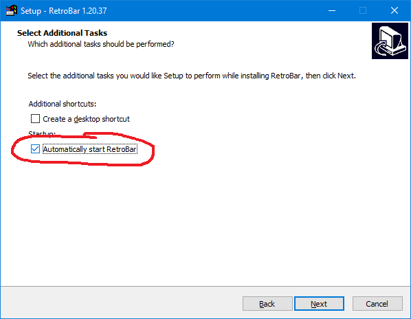
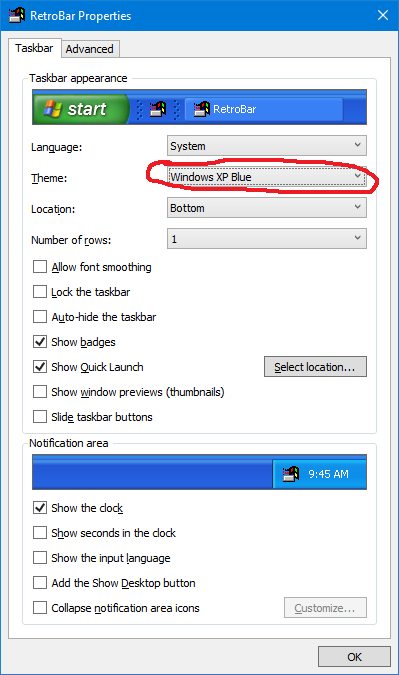
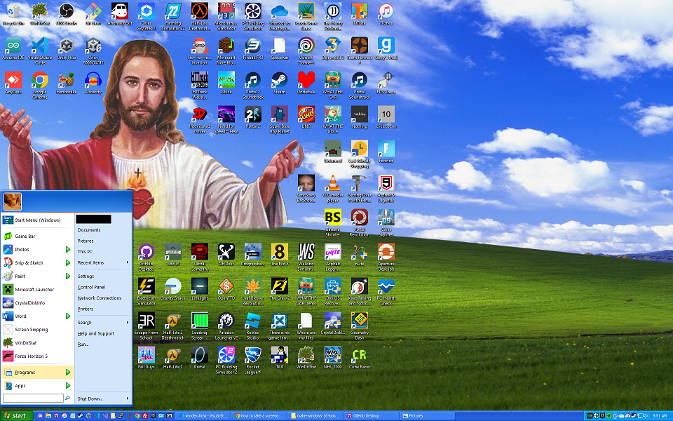

I have a bit of a soft spot for the Windows XP interface. While I couldn't figure out how to make Windows 10 look exactly like it, I got pretty close with the taskbar and start menu.
This tutorial has 2 sections: Start Menu and Taskbar.
STEP 1: Downloading and installing Open Shell
In order to make the start menu look like Windows XP, you'll need to install Open Shell. Download the most recent installer, and run it.
If you see a window similar to this one when you run the installer, do not worry; It is not malware. To continue, click "More info" and then click "Run anyway".

Once you have finished installing Open Shell, you can continue to step 2.
STEP 2: Configuring Open Shell
If everything worked properly, you should see that the start menu button has changed to an icon of a seashell. Right click on it, and then click on "Settings" to open the settings menu.

Make sure that "Classic with two columns" is selected. Click OK to save the settings.
STEP 1: Downloading and installing RetroBar
To make the taskbar look like Windows XP, you need to install RetroBar. Download the installer ZIP file, and extract it. Next, run the installer EXE.

When you get to the "Select Additional Tasks" screen, make sure that you check the box labeled "Automatically start RetroBar". If you do not, you will have to launch RetroBar manually every time you restart your computer.
STEP 2: Configuring RetroBar
Now that RetroBar is installed and running, your taskbar should look like the old Windows 95/98 taskbar. To open the RetroBar settings, right click on an empty section of the taskbar and select "Properties".

Change the theme to "Windows XP Blue". If you have multiple monitors and want to have the taskbar appear on both, go to the "Advanced" tab and check the box labeled "Show on multiple displays".
Congratulations! You have now made your start menu and taskbar look like Windows XP.

To revert back to the normal Windows 10 UI, just uninstall Open Shell and RetroBar through Control Panel or Windows Settings.